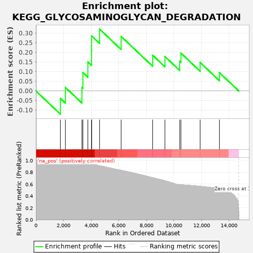
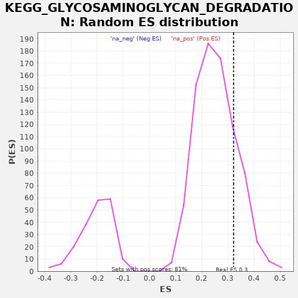

| | | Dataset | drug_embeddings_gsea |
| Phenotype | NoPhenotypeAvailable |
| Upregulated in class | na_pos |
| GeneSet | KEGG_GLYCOSAMINOGLYCAN_DEGRADATION |
| Enrichment Score (ES) | 0.32194978 |
| Normalized Enrichment Score (NES) | 1.257952 |
| Nominal p-value | 0.19727047 |
| FDR q-value | 0.6382918 |
| FWER p-Value | 1.0 |
Table: GSEA Results Summary

Fig 1: Enrichment plot: KEGG_GLYCOSAMINOGLYCAN_DEGRADATION
Profile of the Running ES Score & Positions of GeneSet Members on the Rank Ordered List
| PROBE | GENE SYMBOL | GENE_TITLE | RANK IN GENE LIST | RANK METRIC SCORE | RUNNING ES | CORE ENRICHMENT | | 1 | HS3ST3B1 | | | 1770 | 1.000 | -0.0387 | Yes |
| 2 | HYAL1 | | | 2135 | 1.000 | 0.0184 | Yes |
| 3 | GALNS | | | 3334 | 1.000 | 0.0187 | Yes |
| 4 | NAGLU | | | 3403 | 1.000 | 0.0959 | Yes |
| 5 | IDS | | | 3764 | 0.967 | 0.1506 | Yes |
| 6 | HYAL4 | | | 4029 | 0.942 | 0.2098 | Yes |
| 7 | ARSB | | | 4035 | 0.942 | 0.2865 | Yes |
| 8 | GUSB | | | 4610 | 0.910 | 0.3219 | Yes |
| 9 | HPSE | | | 6172 | 0.832 | 0.2837 | No |
| 10 | SGSH | | | 8455 | 0.707 | 0.1862 | No |
| 11 | GLB1 | | | 9346 | 0.656 | 0.1793 | No |
| 12 | GNS | | | 10415 | 0.590 | 0.1549 | No |
| 13 | HEXB | | | 10507 | 0.588 | 0.1968 | No |
| 14 | HEXA | | | 11895 | 0.562 | 0.1484 | No |
| 15 | HYAL2 | | | 13294 | 0.518 | 0.0956 | No |
Table: GSEA details [plain text format]

Fig 2: KEGG_GLYCOSAMINOGLYCAN_DEGRADATION: Random ES distribution
Gene set null distribution of ES for KEGG_GLYCOSAMINOGLYCAN_DEGRADATION